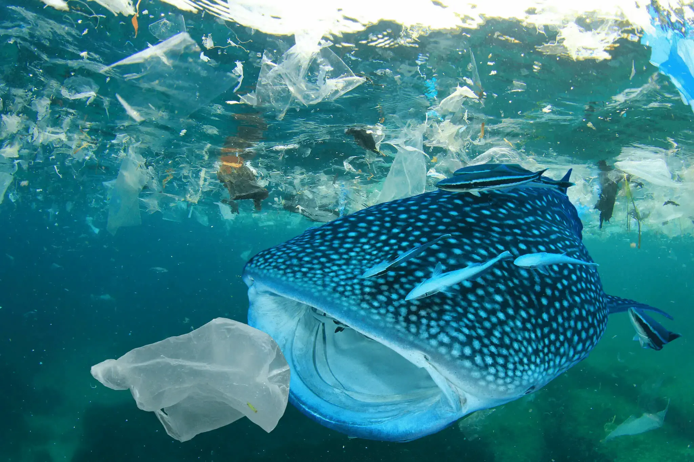

Why do we need eco-friendly products?
Eventhough though we request you to purchase our eco-friendly products. As our valuable customers, you all might be having a question.
Why cannot we go to the cheap plastic products? So this is our responsibility to ensure that your all doubts are cleared.
Problems faced by Sri Lanka due to plastic contamination.
- Srilanka is ranked as the 5th largest country which is polluted due to plastic products are not recycled and are just thrown away to the sea. Therefore, the marine mammals and other wonderful creatures in the ocean are suffering after consuming the plastic materials. 
- The plastic contains two harmful chemical substances called Phthalates and Bisphenol A(BPA) which badly affects the hormones which are present in the human body.So normally these two chemicals are used to manufacture plastic water bottles.
- Every year, millions of species are killed by plastic waste because when the animals eat them the stomachs gets filled with plastics and that decreases the urge to eat.
- The plastic cause major air pollution and releases harmful toxins when people burn them.
Benefits of Using Environmentally Friendly Products.
- Eco-Friendly or Environmentally Friendly products do not harm the environment and the earth. Moreover, moving forward to environmentally friendly products are good for the environment as well as people’s health.
- By changing to eco-friendly products we can minimize throwing plastic wastes.
- Eco-friendly products can be recycled easily.
- Environmentally friendly products are compostable which means that they can be decomposed without any emission of toxins.
- Process of manufacturing eco-friendly products does not require any harmful substances.
How To Choose a Good Environmentally Friendly Product?
- Reusability
- Material
- Durability
- Manufacturing Process
Make sure the product is can be reused repeatedly.
Choose materials that are labeled biodegradable or compostable since both have some difference.
Click the globe to know about the difference between biodegradable and compostable.

You should be able to use the purchased product for a longer period of time.
When looking for an eco-friendly product, the customer should explore into the products manufacturers.So you can make sure that you get an Eco-Friendly product.